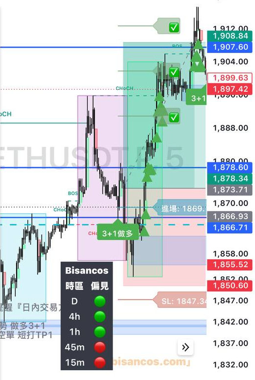
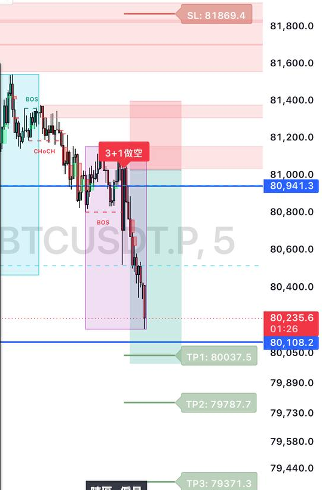

K 棒密密麻麻，你盯了 10 分鐘。
「現在到底是要漲，還是要跌？」
看不出來，最後關掉 App，
跟自己說：明天再看。
你錯過了。
下次不想再錯過，
看到在漲就趕快追。
結果，買在最高點。
盤面上的資訊太多了。
你沒有 8 小時可以盯盤，
下班後只剩一點點時間，
本來就很難靠感覺判斷。
高點、低點都一直墊高，
就是往上的趨勢。反過來就是往下。
| 長相 | 怎麼判斷 | 新手先這樣做 |
|---|---|---|
| 往上 | 高點、低點都在墊高 | 順著方向，找做多機會 |
| 往下 | 高點、低點都在變低 | 不要急著抄底 |
| 盤整 | 忽高忽低，沒有方向 | 先不要動，等方向出來 |
如果打開盤面，方向、進場、停損、目標
都已經標好了呢？

往上：標出做多＋停損

往下：標出做空＋停損
我們用 AI 把這些判斷，做成了一套工具：3+1 指標。
會用工具，一樣看得懂走勢，
不再憑感覺亂下單。
📌 先收藏，看盤時對照
👉 追蹤 @_hannapang，每天一個 K 棒觀念
僅為教學分享，不構成投資建議；指標為輔助工具，仍需自行控管風險